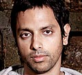

|
Youth Summit 2010:
Speakers
Nandan Nilekani
Chairman of the Unique Identification Authority of India (UIDAI) Inaugural Session: Dream Big, Do Bigger Nandan Nilekani is the Chairman of the Unique Identification Authority of India (UIDAI) with the rank of Union Cabinet Minister. UIDAI aims to provide a unique identification number for all residents of India.
He was most recently, Co-Chairman of the Board of Directors of Infosys Technologies Ltd., which he co-founded in 1981 and served as Director upto July '09.He has held various posts at Infosys, including Chief Executive Officer and Managing Director, President, and Chief Operating Officer. A Bachelor in Electrical Engineering from IIT, Bombay, Nilekani co-founded India's National Association of Software and Service Companies (NASSCOM) as well as the Bangalore chapter of the IndUS Entrepreneurs (TiE). He is a member of the Board of Governors of the Indian Council for Research on International Economic Relations (ICRIER) and the President of NCEAR, the premier, independent, applied economics research Institute in India. He was named the Corporate Citizen of the Year at the Asia Business Leaders Award (2004) organized by CNBC. In 2005, he received the prestigious Joseph Schumpeter Prize for innovative services in economy, economic sciences and politics. In 2006, he was awarded the Padma Bhushan, named Businessman of the Year by Forbes Asia and listed by Time magazine as one of the 100 most influential people in the world. He was on the Time list again in 2009. Nilekani is the author of 'Imagining India', which was one of the finalists for the FT-Goldman Sachs Book Award for the year 2009. Viswanathan Anand
World Chess Champion Luncheon Keynote Session: Keep Your Eye on the Board The six-year-old who was taught chess by his mother has become world champion in all three formats of the game, leaping over incipient racism, rampant politics and lack of systemic support. Overcoming the 1995 and 1998 losses of the world chess championships, he motivated himself into becoming the first Asian to win the tournament in 2000 and then undisputed champion in 2007. Building a team in the cut-throat universe of competitive chess, choosing to live in Spain, and maintaining his equilibrium in the face of dizzying success, he has transformed into a one man chess revolution. He has won rapid chess events against computers, as well as classical chess tournaments. With lightning speed, on-board intuition and the ability to read the game ahead of everyone else, he has left his stamp on a world hitherto dominated by the West. The youngest Indian to win the international master's title at 15 in 1984, he's been playing at the top of his game for the past 26 years.
Chhavi Rajawat
Sarpanch Session Careers: Believe in Yourself With an undergraduate degree from Lady Shri Ram College in Delhi and an MBA from the Indian Institute of Modern Management in Pune, Chhavi Rajawat could have had a dream corporate career had she chosen. And for five years, she did. Till she decided to give it up and fight the Sarpanch elections from Soda, 60 km from Jaipur in Rajasthan, her ancestral village of 3,200 voters. Whether it is changing the mindset of the villagers towards the Mahatma Gandhi National Rural Employment Guarantee Scheme, or towards women, Rajawat is bringing her precise management principles to the often chaotic world of grassroots politics. She also looks after a hotel that the family owns in Jaipur and the numerous horses that are part of her riding school.
Sanjeev Sanyal
Economist/Environmental Activist/ Author Session Careers: Believe in Yourself Economist and environmental activist, Sanjeev Sanyal wears both his hats with ease. Founder & President of the Sustainable Planet Institute, he was named "Young Global Leader 2010" by the World Economic Forum. Honorary Senior Fellow of WWF, Member of the Steering Committee of Urban Age at the London School of Economics, Member of the Board of Governors of the Sushant School of Architecture as well as the Action for Food Programme, and Director & Co-Founder of Green Indian States Trust, he is also one of Asia’s leading financial economists and was Deutsche Bank's Chief Economist for the region till 2008. He attended Shri Ram College of Commerce, Delhi and then Oxford University where he was a Rhodes Scholar. He is the author of "The Indian Renaissance: India's Rise After a Thousand Years of Decline".
Mukul Deora
Entrepreneur, Musician, Installation Artist Session Careers: Believe in Yourself Serial entrepreneur and serial artist, Mukul Deora can never be put in just one box. A graduate of King's College London, he is the founder of one of India's largest packaging firms, Mipak Polymers Limited, Sonopress India (a subsidiary of the world's largest CD manufacturing firm), and helped start Volte, Mumbai’s latest cutting-edge art gallery, where he had a solo show. He also launched Dudup (the sound of your heartbeat), his music label, in London last year. He now runs an investment company and is also a successful music producer and multimedia artist, having performed at institutions like the Tate Modern and the Serpentine Gallery in London. His debut album, Stray, reached number 12 in the charts. His second, What Heart, was released last year. His last art show, Break, was a participative performance where the audience confronted their primal nature by smashing a car, and he launched the UK Cultural Olympics last year with an audio-visual piece. He also runs Watchtower Entertainment, a production company which will produce movies for postmodern India. His first film is the sequel to the sleeper hit, Bheja Fry.
Jaideep Sahni
Engineer turned Screenwriter Session Careers: Believe in Yourself Jaideep Sahni is a film writer and lyricist, who has given us the enduring characters of the effervescent Bunty and Babli, the upright hockey coach Kabir Khan in Chak De! India and the gullible Mr Khosla of Khosla ka Ghosla. An egineer by training, Sahni worked in advertising for almost a decade. He then plunged into the Mumbai film industry, after a chance encounter with the screenplay of Gandhi in a South Extension bookshop. He has since then become one of Bollywood's most impressive young voices, with films that tell the story of contemporary, changing India. From the mafia lords of Company, to the small town dreamers of Bunty Aur Babli, to the spirited rainbow-nation women hockey players of Chak De! India, to the ethical Sikh salesman of Rocket Singh: Salesman of the Year, he has created people on screen who often act as we do. He also writes lyrics, from the bubblegum pop of Salaam Namaste to the rabble rousing anthems of Tere Bin Laden. Pranav Mistry
Inventor, Designer, Engineer Session Technology: The Magic of Sixth Sense Technological guru Chris Anderson has called him one of the three best inventors of the world right now. With reason. At 29, the PhD student at MIT's Media Lab has patented Sixth Sense, a wearable device that enables new interactions between the real world and the world of data. He has also invented Intelligent Sticky Notes that can be searched and can send reminders; a Pen that draws in 3D; and TaPuMa, a tangible public map that can act as the Google of the physical world. Winner of the 2009 Invention Award from Popular Science and of the Young Innovator Award from Technology Review, his work has brought him a lot of media attention. Harnessing the best of both worlds--he holds a Master in Media Arts and Sciences from MIT and Master of Design from IIT Bombay--Mistry has also invented a designation for himself: a Designeer, who believes the imagination is the only limit in merging technology with real lifel.
Sourav Ganguly
Cricketer Keynote Session: Going For Broke Former India Captain, Sourav Ganguly is largely responsible for making the national cricket team into a band of die-hard fighters, restoring much of the sheen that had been lost due to the match-fixing scandal of 2000. One of India's most successful sports leaders, he won 21 of his 49 Tests matches, took India to a World Cup final and was the core of an Indian team that began winning matches and series away from home. A stylish batsman, Dada, as he is fondly known, has shown the same grit in his individual career. The fourth-highest Indian Test batsman just behind the pantheon of Tendulkar, Dravid and Gavaskar, Ganguly is also ranked among the top five run scorers in the limited overs game, scoring 11,363 runs with 22 centuries in one day internationals. He has never been far from controversy, with long absences from the field and equally determined comebacks. And one of the most enduring popular images of the resurgence of Indian cricket in the time of television, is Ganguly brandishing his team shirt after winning the Natwest Trophy in Lords in 2002.
Katrina Kaif
Actor Session Cinema: No Grit, No Glamour Katrina Kaif, the British-Indian actress has seen tremendous success in the short span that she has been part of Bollywood. Kaif debuted with filmmaker Kaizad Gustad’s Boom in 2003 and then saw a successful stint as a model before returning to the film industry in 2005 with Sarkar and Maine Pyaar Kyun Kiya, followed by a string of hit films that included Namastey London, Partner, Sinngh is King, New York and Ajab Prem Ki Ghazab Kahani in which her performances were highly appreciated. From the negative role in Race to that of a serious politician in her recent film Rajneeti, she has even won over the critics. Kaif has been paired with the biggest names in the industry and worked with almost every reputed director.
Sachin Pilot
Minister of State for Communications and Information Technology Concluding Session - Politics: The Good, The Bad & The Ugly Sachin Pilot is the Minister of State for Communications and Information Technology. The 33 year old is a second time Congress MP from Rajasthan, representing the Ajmer constituency. He is the son of the late Congress leader Rajesh Pilot, and like his father, is a promiment leader of the Gujjar community. Sachin was educated at Air Force Bal Bharti School in New Delhi and graduated from St. Stephens College, Delhi University. While in college, Pilot was the captain of the college shooting team. He received his MBA from Wharton Business School. Pilot is also a key member of Rahul Gandhi's team of young MPs.
|
|
|||||||||||||||||||
|